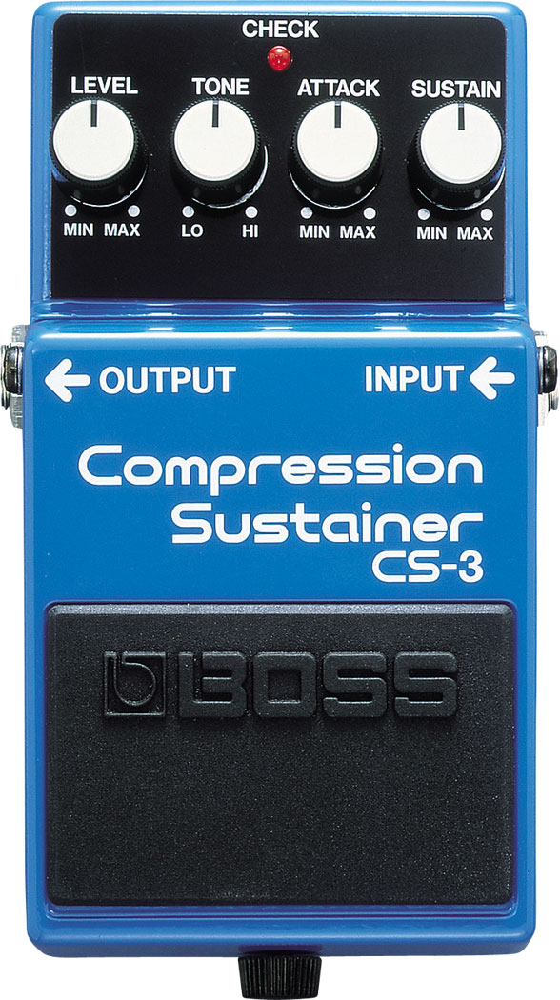
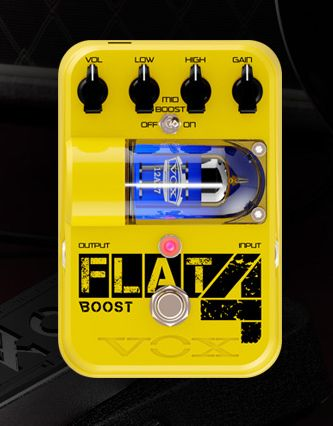
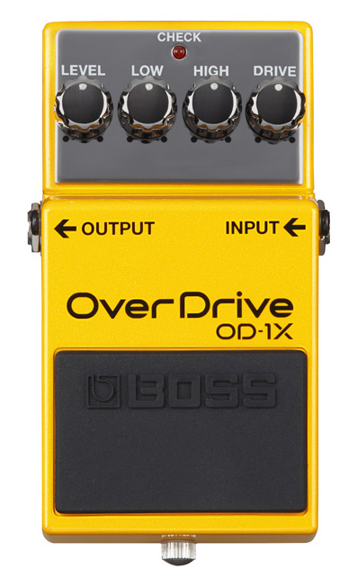
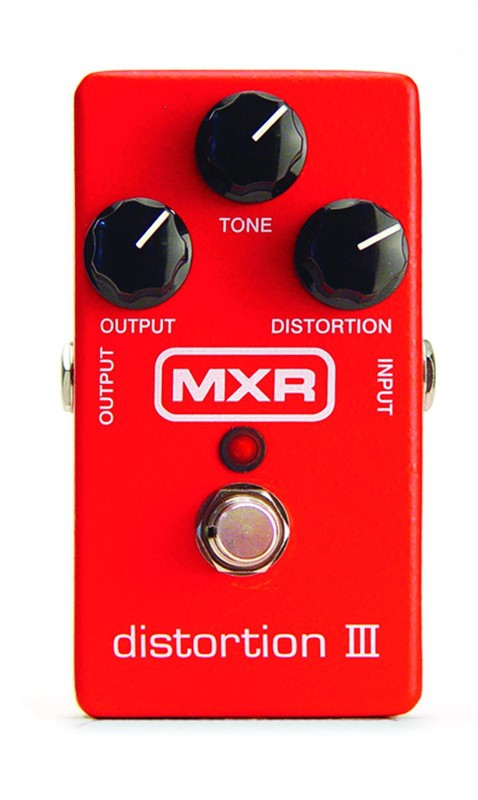
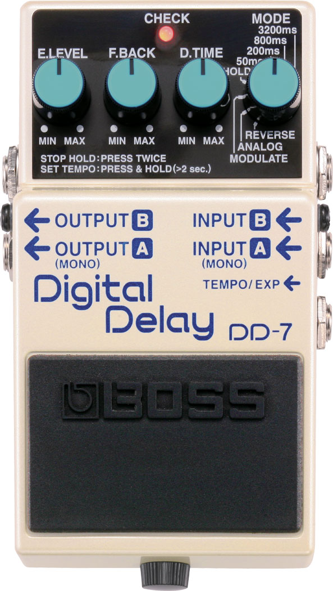
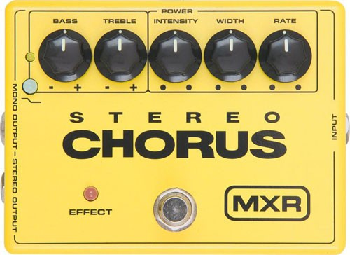
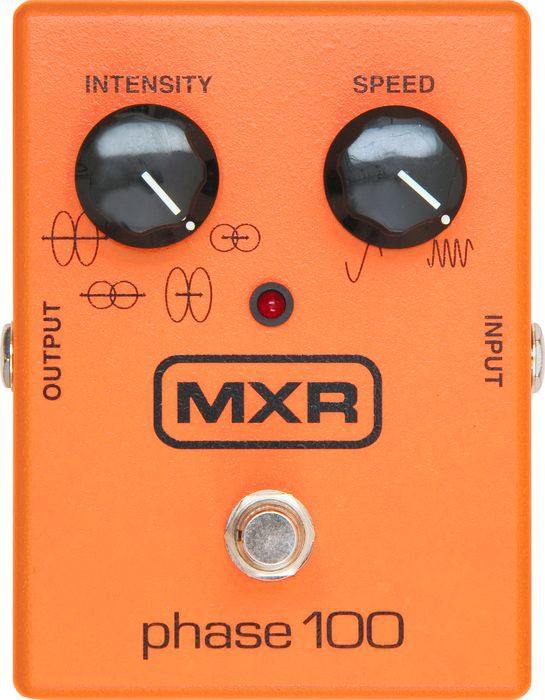
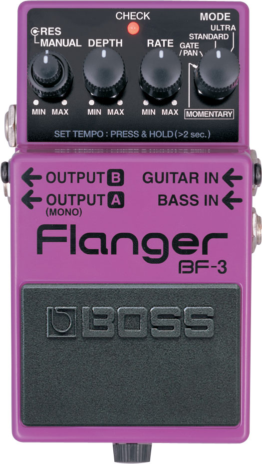

Pedales
1.COMPRESOR

El compresor es, de los pedales para guitarra, el que reduce el rango dinámico; es decir, la diferencia de volumen entre el pico más alto y el pico más bajo. Su efecto consigue regular el volumen, aumentando las notas más débiles o bajas y limitando las más altas o fuertes; por lo que, en directo, ofrece un sonido más ‘controlado’ y cercano al sonido de estudio, y ayuda a disimular errores de interpretación. Este tipo de pedales también se suele usar para aumentar el ‘sustain’ de las notas, alargando considerablemente su duración.
De los pedales para guitarra puede ser el más complejo de comprender debido a que sus parámetros de ajuste son muy técnicos.
2.BOOSTER.
| 
Como su propio nombre indica, este pedal sirve para dar ‘empuje’, ya que se utiliza para subir los decibelios -es decir, el volumen- en momentos determinados.
3.OVERDRIVE
| 
Los pedales overdrive colorean el sonido, saturándolo y dando lugar a una distorsión dulce, cálida y profunda. En definitiva, emulan la leve distorsión que se experimenta con los amplificadores de válvulas y que es tan difícil conseguir usando amplificadores a transistores.
4.DISTORTION
| 
Una variación de esta función la ofrecen los pedales de distorsión, que ofrecen una saturación mucho más elevada y por tanto una distorsión más potente, compacta y fría; de ahí que se usen con más frecuencia para música rock y metal.
5.DELAY
| 
El delay es uno de los efectos más interesantes que puedes incluir en tu pedalera, ya que da mucho margen para probar y experimentar. De hecho, ¡para muchos llega a ser hasta adictivo! Con este pedal conseguirás multiplicar y retrasar la señal sonora, provocando ese clásico efecto de ‘eco’.
6.MODULACION
Los últimos componentes fundamentales en toda pedalera. Los pedales de modulación, como bien indica su nombre, modulan la frecuencia del tono de diferentes formas, en función del tipo concreto de pedal que estemos usando. Básicamente, existen tres tipos: el pedal Chorus, que crea una señal en vibración y la superpone con la señal original (dando la impresión de que son dos instrumentos al unísono, uno de ellos levemente desafinado); Phaser, cuyo efecto provoca una especie de ‘barrido’ de la señal (como si sonaran las aspas de un helicóptero); y Flanger, que podría entenderse como una mezcla de los otros dos.

| 
| 
| |